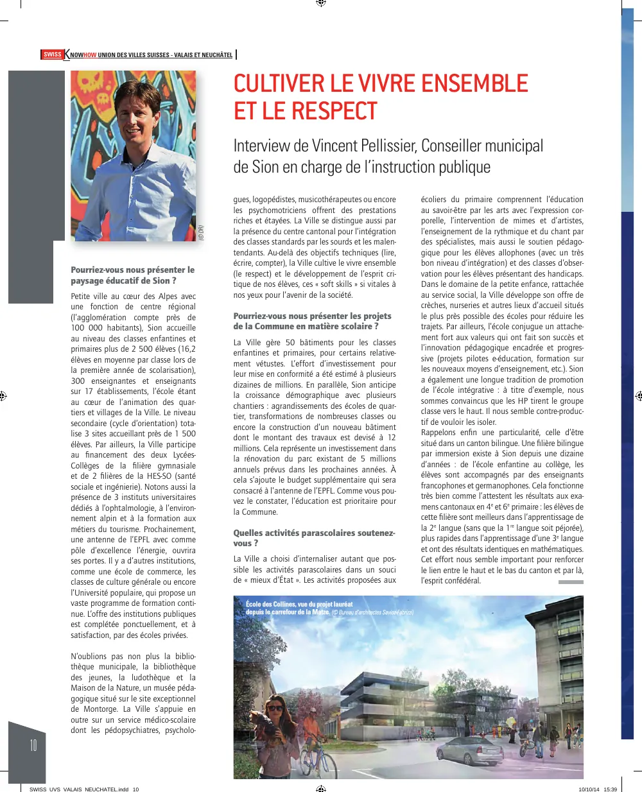

Portrait · Swiss Knowhow – Union des villes suisses : Valais et Neuchâtel (2014)
Sion, une petite capitale devenue un vrai centre urbain
Capitale du Valais, la ville de Sion est de taille moyenne, mais participe grandement au rayonnement du canton. Il faut dire que la cité grandit et est passée du statut de petite capitale administrative à celui de véritable ville confrontée au défi de la densification. Elle accueille désormais un pôle de formation important, lié à l’arrivée de l’EPFL et à la présence de la HES, à l’implantation de nombreuses sociétés de l’industrie énergétique, d’un aéroport civil en plein développement et d’un projet d’agglomération à treize communes.
L’an dernier, la ville de Sion a reçu le Prix Wakker qui salue « la volonté exemplaire de la ville de Sion de se développer en harmonie avec son paysage et son patrimoine ». La commune, qui bénéficie d’un climat exceptionnel, avec 300 jours d’ensoleillement cumulés par année, a su gérer le développement de son territoire, tout en préservant une importante zone de verdure à l’est. La ville sait également prendre soin de son patrimoine et a aménagé son centre-ville de manière à en faire une « zone de rencontre » où la vitesse est limitée à 20 km/h : les piétons y ont la priorité sur les bicyclettes, qui passent elles-mêmes avant les voitures. Le centre-ville ne manque pas d’animations : il accueille des marchés et plusieurs manifestations, comme un festival d’art de rue durant l’été.
Epargnée par la crise du logement, l’offre sur le marché immobilier restant supérieure à la demande, la ville de Sion offre un cadre de vie très agréable, avec de nombreuses terrasses ensoleillées. Forte de 32 000 habitants, la commune se rapproche désormais de villes de la taille de Neuchâtel ou Yverdon-les-Bains. « L’arrivée il y a 25 ans de l’Ecole d’ingénieurs a contribué de manière importante à cette évolution », souligne le président de Sion Marcel Maurer.
Implantation de l’EPFL
Aujourd’hui, c’est l’implantation de l’EPFL et de ses onze chaires de recherche dans le domaine des énergies propres et des neuro-ingénieries qui contribue à modifier le profil urbanistique et économique de la ville. Le quartier de la gare est en plein réaménagement en vue notamment d’accueillir un campus et la HES. La présence de ces écoles a permis l’émergence d’activités à haute valeur ajoutée dans le domaine des convertisseurs solaires, de l’horlogerie ou de l’agroalimentaire.
Située au cœur des Alpes, la ville est également très impliquée dans les défis énergétiques, grâce à la présence de nombreuses sociétés de l’industrie énergétiques sur son territoire.
Par ailleurs, la ville de Sion bénéficie de la présence de son aéroport en passe de devenir totalement civil. Des possibilités de développement existent, assure le président de la Ville, évoquant notamment les multiples activités existantes : outre, la possibilité de développer des vols de ligne, l’aéroport dispose d’un potentiel dans l’aviation légère, le vol à voile, le parachutisme, le sauvetage en montagne, la formation ou encore la maintenance.
AggloSion : un projet de mobilité
Mais Sion voit aussi plus loin que son nombril : la Ville a déposé en décembre 2011 à Berne un projet d’agglomération. Fruit de la collaboration de 13 communes du Valais central, « AggloSion » présente un concept de mobilité, comprenant le vélo, le train, la voiture et les cars postaux. Il a obtenu un co-financement à 40 % de la Confédération. La commune a déjà fusionné avec le village de Salins et déposé une prédemande de concession afin de construire une télécabine qui devrait la rapprocher des pistes de ski, dont la fameuse piste de l’Ours à Vesyonnaz qui a accueilli nombre de courses de Coupe du monde.
Parmi les plus gros défis que la Ville doit relever, la sécurisation des habitations au risque sismique n’est pas des moindres, le Valais étant la région la plus exposée de Suisse. Il y a également la sécurisation du Rhône, dont les digues ont été renforcées. Enfin, la gestion de la densification se pose également aux autorités.
Du côté des finances, la Ville, qui emploie quelque 600 collaborateurs, s’en tire plutôt bien et est quasi exempte de dettes. Ses revenus sont relativement stables, même si une part de ses recettes a momentanément disparu (production énergétique) en raison du surplus d’énergie sur le marché. Des investissements sont prévus dans la création de certains parkings, l’assainissement urbain, la sécurisation des cours d’eau et l’entretien du stade Tourbillon. La Ville reste en outre fiscalement attrayante, avec un coefficient d’impôt bas. Elle a été placée récemment en 3e position des villes gérant le mieux leurs finances par un magazine romand. « Je suis un président de ville assez heureux », conclut Marcel Maurer.
Texte paru dans Swiss Knowhow – Union des villes suisses : Valais et Neuchâtel (2014), p. 04, tel que publié dans l'édition imprimée. En cas d'écart, la version imprimée fait foi.
Photos
Articles
 Portrait · texte intégral
Portrait · texte intégralSion, une petite capitale devenue un vrai centre urbain
Un développement ambitieux et harmonieux – Marcel Maurer, président de la Ville de Sion
 Interview · texte intégral
Interview · texte intégralSion, une ville attractive pour l'économie et le tourisme
Interview de Benoît Fournier, vice-président de Sion et président de Sion Tourisme
Renforcer la mobilité douce et les transports publics
Interview de Georges Joliat, chef du service des travaux publics de la Ville de Sion
Le sport pour tous !
Interview de Blaise Crittin, chef du service des sports de la Ville de Sion
Un aéroport accessible, proche des grandes stations
Interview de Cyrille Fauchère, président de la commission de l'aéroport international de Sion

Interview · texte intégralDu dynamisme de la vie culturelle sédunoise
Interview de Gaëlle Métrailler, déléguée culturelle de la Ville de Sion
Cultiver le vivre ensemble et le respect
Interview de Vincent Pellissier, conseiller municipal de Sion en charge de l'instruction publique